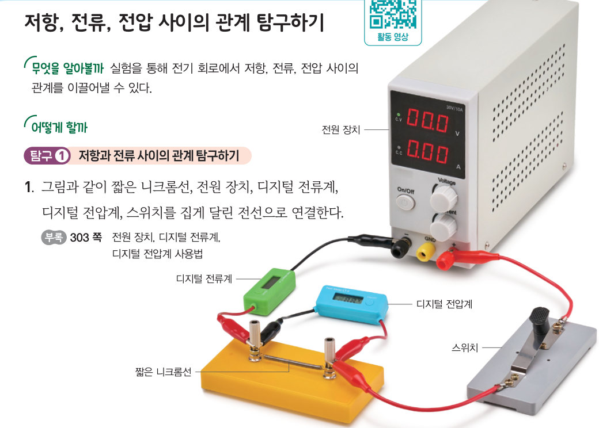
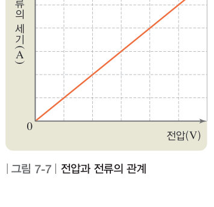
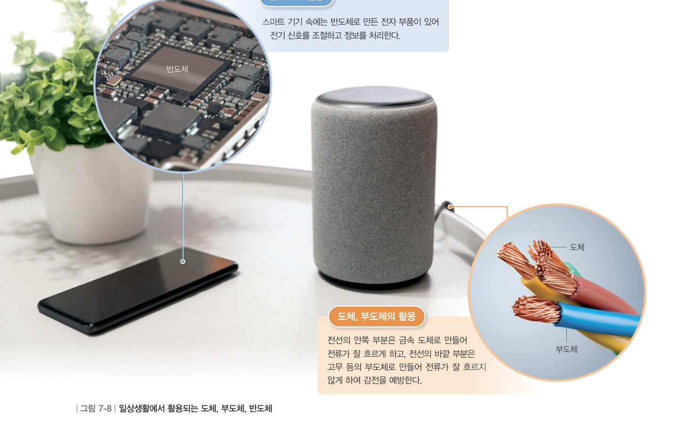

전구의 밝기를 줄이려면 어떻게 해야 할까? 가상 전원 장치로 니크롬선의 길이와 전압을 바꾸며 전류를 측정하고, 직접 그래프를 그려 옴의 법칙을 이끌어 낸 뒤, 여러 물질의 저항을 비교해 보자.
전지에는 1.5 V, 6 V 등 전압이 표기되어 있다. 전압은 전류를 계속 흐르게 하는 원인으로, 단위는 V(볼트)를 사용한다. 한편, 전기 회로에서 전구는 전류의 흐름을 방해한다. 이때 전류의 흐름을 방해하는 정도를 저항 또는 전기 저항이라고 하며, 단위는 Ω(옴)을 사용한다.
| 구분 | 짧은 니크롬선 | 긴 니크롬선 |
|---|---|---|
| 전류의 세기(mA) |
| 전압(V) | 0.0 | 1.5 | 3.0 | 4.5 | 6.0 |
|---|---|---|---|---|---|
| 전류의 세기(mA) | 0 |
탐구에서 전압이 같을 때 긴 니크롬선보다 짧은 니크롬선에서 더 센 전류가 흐른다. 이는 긴 니크롬선이 짧은 니크롬선보다 전류의 흐름을 방해하는 정도, 즉 저항이 더 크기 때문이다. 전기 회로에 같은 전압이 걸릴 때 저항이 클수록 전류의 세기는 감소한다.
한편 니크롬선에 걸리는 전압이 2 배, 3 배, 4 배로 증가하면 니크롬선에 흐르는 전류의 세기도 2 배, 3 배, 4 배로 증가한다. 즉, 전기 회로에서 전류의 세기는 전압에 비례한다. 전기 회로에 흐르는 전류의 세기는 전압에 비례하고 저항에 반비례하며, 이러한 관계를 옴의 법칙이라고 한다.
전류의 세기 = 전압 ÷ 저항 ( I = V / R )

물질의 종류가 다르면 저항도 다르다. 우리 주변의 물질은 저항에 따라 도체, 부도체, 반도체로 구분할 수 있다. 금속처럼 저항이 작아 전류가 잘 흐르는 물질을 도체라고 하고, 천연고무나 나무처럼 저항이 커서 전류가 잘 흐르지 않는 물질을 부도체 또는 절연체라고 한다. 규소나 저마늄 등의 물질과 같이 저항이 도체와 부도체의 중간 정도인 물질도 있는데 이를 반도체라고 한다. 순수한 반도체에 불순물을 넣으면 전류의 흐름을 조절할 수 있어 반도체는 스마트 기기, 자동차, 전기밥솥 등 다양한 전기 기구에 쓰인다.

| 구리 | |
| 철 | |
| 니크롬 | |
| 규소 | |
| 고무 | |
| 나무 | |
| 유리 |
| ④ 저항이 일정할 때, 전압이 클수록 전류의 세기는 커진다. | |
| ⑤ 전압이 일정할 때, 회로에 연결된 저항이 작을수록 전류의 세기는 작다. | |
| ⑥ 전류의 세기가 일정할 때, 전압이 클수록 회로에 연결된 저항의 크기가 크다. |
| 저항이 작아 전류가 잘 흐르는 물질 | |
| 저항이 커서 전류가 잘 흐르지 않는 물질 | |
| 저항이 도체와 부도체의 중간 정도인 물질 |
| 평가 기준 | 스스로 평가 |
|---|---|
| 지식·이해 전압, 전류, 저항의 뜻과 관계를 설명할 수 있는가? | |
| 과정·기능 전압과 전류의 세기를 정확하게 측정하고, 결과를 그래프로 해석했는가? | |
| 가치·태도 결론을 도출하는 과정에서 친구들의 이야기를 경청했는가? |